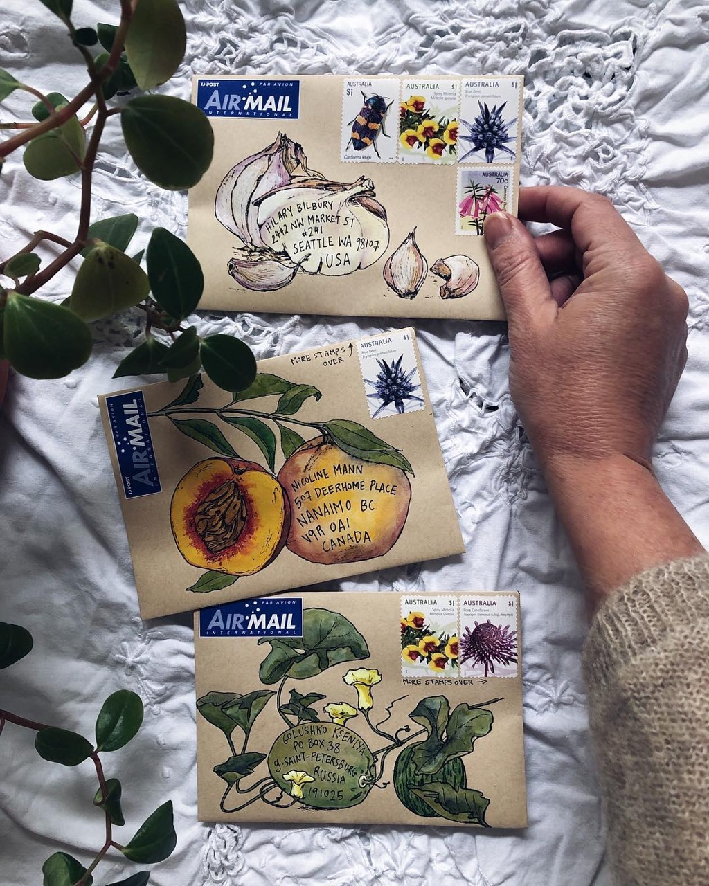
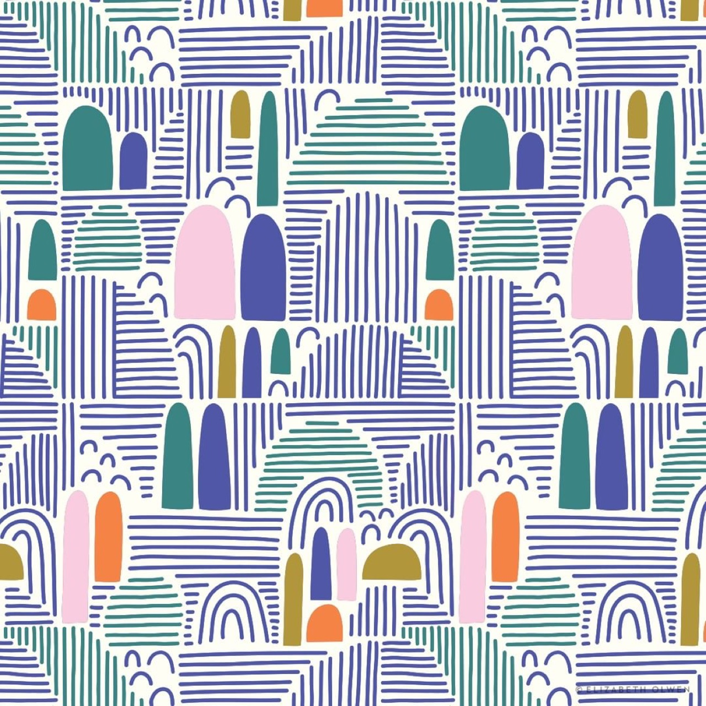
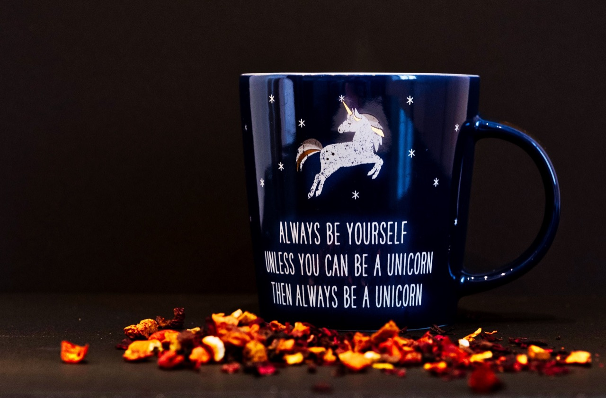

Artist, designer, and educator Zoe Gilbertson is known for her mesmerizing color patterns that are created by a combination of wool, spraypaint, and tapestry canvas, offering an alternative interpretation to the traditional pastime of embroidery. Having studied Fashion at UCA Epsom, her work with textiles is very much a continuation of her early studies.

But surprisingly, as a fashion designer, Gilbertson rarely worked with embroidery or hand stitching. “The act of hand stitching is still very traditional and loaded with meaning,” she shared with Venison Magazine. “Visually I want to create something modern and relevant to contemporary art today and the digital references are formed through the design of the artwork,” she adds.

As she explores the relationship between the handmade and the digital, Gilbertson hopes to push the boundaries of contemporary embroidery and elevate stitched work to a higher level, ideally putting it on a par with other art forms. Her work includes color studies of gradients moving through shades and single colour studies and exploration of fades, gradients and geometry, as she explores the ways in which our eyes and mind react when confronted with an unusual presentation of color. “I like the visual and conceptual link between a pixel and a stitch, the digital and traditional,” notes Gilbertson.

“Sometimes I plan out a work in advance digitally and intricately,” she says of her artistic process, “sometimes I just stitch straight onto the canvas with only a vague plan in mind. Both methods work.” Check out some of her mesmerizing work in the gallery below: